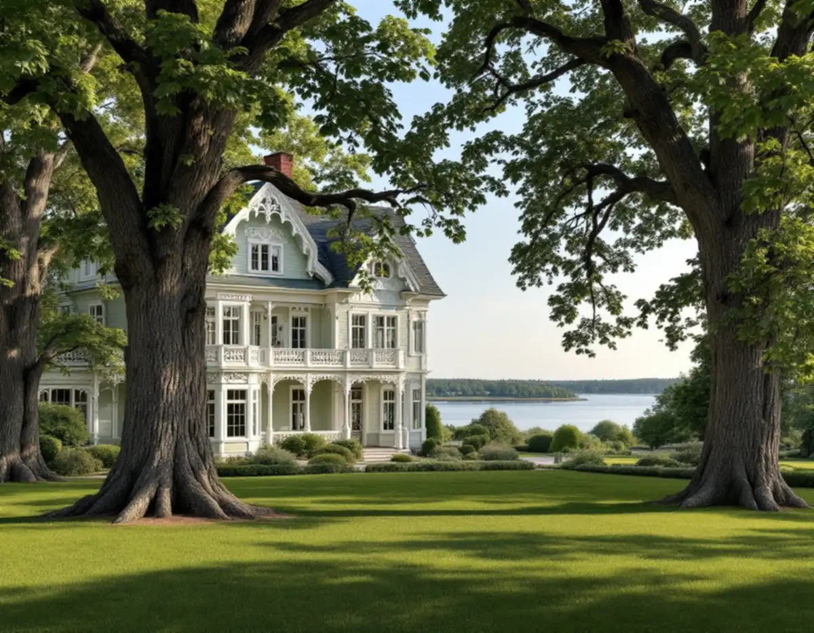
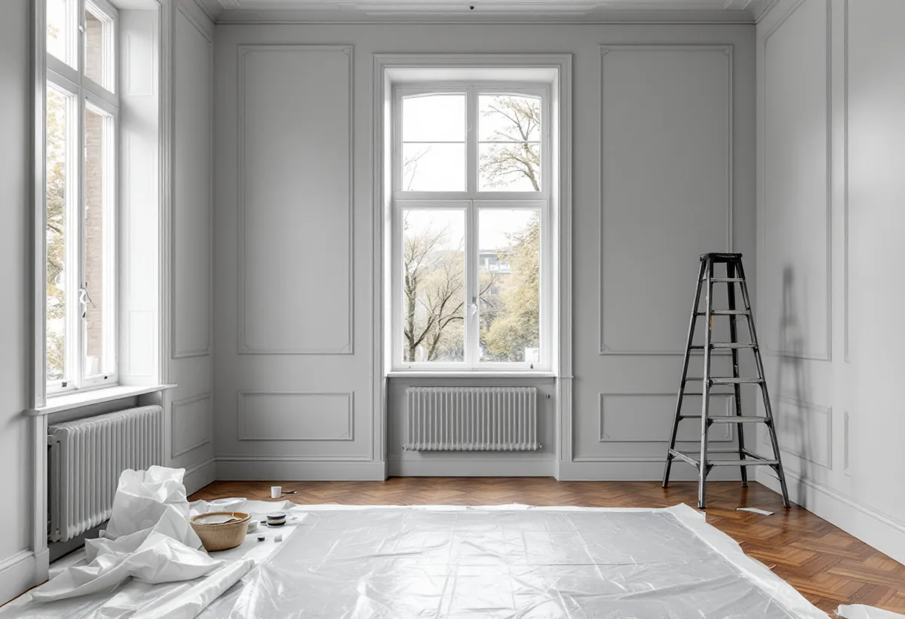

Platsbesök
Vi går igenom fasad, snickerier och fönster, eller rummen i lägenheten, och gör skrapprov där det behövs.

Stora delar av Solna räknas av staden som kulturhistoriskt värdefulla, och där gäller inte de lovfria reglerna för kulörbyte.
Beskriv jobbet kort.
Något blev fel. Kontrollera uppgifterna eller ring 08 12 410 276.
Vi tittar på jobbet på plats innan du får offert.
Du ser vad som ingår och vad det kostar.
Vi drar av ROT direkt och sköter ansökan.
Geal Entreprenad AB, Bromma. Org.nr 559303-7566.

Bor du i bostadsrätt är frågan i stället vad du själv ansvarar för och vad som ger rotavdrag. Geal Entreprenad AB tar målningsuppdrag i hela Solna, med gratis platsbesök och skriftligt kostnadsförslag.
Solna domineras av flerbostadshus, och de egna husen ligger samlade i ett fåtal miljöer. Råsunda planerades kring 1907 med flerfamiljshus i mitten och villor runt om. Villaområdena byggdes ut på 1920-talet, och många av husen byggdes av spårvägare som arbetade vid den stora spårvägsverkstaden. Här möter målaren trävillor med panel, fönster med spröjs och snickerier som har strukits om många gånger.
Vid Stocksundet ligger Alnäs och Stocksundstorp, som Solnas översiktsplan räknar som en sammanhängande kulturhistoriskt värdefull miljö. Där står äldre och nyare villor sida vid sida, och fasaderna kräver olika bedömningar beroende på husets ålder.
Därtill finns Råsta egnahem, Bergshamra by och radhusen vid Solna kyrkby. Färgfrågorna skiljer sig mycket mellan en äldre trävilla med snickeridetaljer och ett egnahem från 1920-talet.
Enligt Boverket krävs sedan 1 december 2025 normalt inget bygglov för att byta kulör på ett en- eller tvåbostadshus. Undantag gäller där detaljplan eller områdesbestämmelser har skyddsbestämmelser, för särskilt värdefulla byggnader och områden och där planen har utökad lovplikt. Solna stad räknar upp var de lovbefriade åtgärderna inte kan användas: i de kulturmiljöer som är markerade i Solnakartan, i riksintressena Karlberg, Solna kyrkby med radhusbebyggelsen, Ulriksdal och Hagaparken, i nationalstadsparken och i de sammanhängande kulturmiljöer som översiktsplanen pekar ut, bland annat Råsunda villastad, norra Råsunda, Råsta egnahem samt Alnäs och Stocksundstorp.
Söker du lov för en ny färgsättning vill staden ha en material- och kulörbeskrivning, fasadritning, foton på huset i dag och gärna illustrationer i färg. För en kulturhistoriskt värdefull byggnad kan det krävas en antikvarisk förundersökning eller ett utlåtande från en sakkunnig i kulturvärden (KUL). Stryker du om i samma kulör som tidigare räknas det enligt Boverket normalt som underhåll.
På en villa med rika snickerier är det detaljerna som avgör både tidsåtgång och resultat. Lövsågade gavelspetsar, konsoler och vindskivor har många kanter där färgen släpper först, och de sitter ofta högt. I Solnas värdefulla miljöer är det just sådana detaljer som ska behållas, så skadade delar lagas eller kopieras av en snickare innan de målas, i stället för att tas bort.
Riksantikvarieämbetet beskriver hur linoljefärg ska strykas tunt i flera lager – vid nymålning grundning, mellanstrykning och slutstrykning – och att färgen kan strykas över efter ungefär ett till tre dygn om vädret är varmt och torrt. Myndigheten varnar också för att ny färg över mycket fet oljefärg lätt ger blåsor, främst på fasader mot söder, oavsett vilken färgtyp man använder.
Fönstren är ett eget arbete: kitt som har släppt, rötskador i nedre karmdelar och bågar som kärvar. Är fönstren för långt gångna att renovera finns mer under fönsterbyte.
De flesta i Solna bor i lägenhet. Enligt bostadsrättslagen ska bostadsrättshavaren på egen bekostnad hålla lägenheten i gott skick, om inte stadgarna säger något annat. Att måla väggar och tak eller tapetsera inne i lägenheten är därför normalt ditt eget beslut. Har lägenheten särskilda kulturhistoriska värden krävs enligt lagen styrelsens tillstånd för ändringar som påverkar de värdena.
Fasader, trapphus och balkonger är föreningens sak. Det märks också i rotavdraget, som bara gäller arbete inne i lägenheten.
I Stocksundstorp vid Stocksundet står husen nära vattnet bland stora träd. Fasader i ett sådant läge får både blåst och skugga, torkar långsamt efter regn och får lätt påväxt. Tvätt, ordentlig torktid och en färgtyp som passar underlaget betyder mer här än på en solig villatomt.
Vi går igenom fasad, snickerier och fönster, eller rummen i lägenheten, och gör skrapprov där det behövs.
För villan kontrollerar vi Solnakartan och detaljplanen, för bostadsrätten vad stadgarna säger.
Underarbete, färgtyp och antal strykningar specificeras, och arbete inne och ute redovisas var för sig.
Tvätt, skrapning, lagning av trä och kittning av fönster, eller spackling och slipning inomhus.
Strykningarna görs i den ordning och med de torktider som färgtypen kräver.
Gemensam genomgång, bättring där det behövs och städning.
I villa och radhus ger både utvändig och invändig målning rotavdrag, men inte målning av staket eller murar. I bostadsrätt gäller avdraget bara arbete inne i lägenheten: väggar, tak, element, dörrar, köksluckor, tapetsering och insidan av fönster och ytterdörr. Skatteverket skriver att arbete som utförs mellan fönstrets in- och utsida inte ger avdrag.
Avdraget är 30 procent av arbetskostnaden, högst 50 000 kr per person och år, och tillsammans med RUT högst 75 000 kr. Geal drar avdraget direkt på fakturan.
På en villa styrs kostnaden av mängden snickerier och fönster, hur mycket gammal färg som behöver bort och om det krävs ställning. I en lägenhet är det väggarnas skick, takhöjd och mängden spackling som avgör. Vi gör ett gratis platsbesök och lämnar ett skriftligt kostnadsförslag.
Fasad, fönster och invändig målning.
Målare i Stockholm →Takbyte, takbesiktning och plåtarbeten.
Takläggare i Solna →Råsunda, Stocksundstorp och Råsta.
Takrenovering i Solna →Kulturmiljöerna, kartan och lovet.
Attefallshus i Solna →Ritningar, kontrollplan och slutbesked.
Byggföretag i Solna →Radhusen, föreningen och lovet.
Fasadmålning i Solna →Putsade villor och krav på material.
Fasadrenovering i Solna →Råsunda, bygglovet och handlingarna.
Fönsterbyte i Solna →Fönster från 1950-talet, kitt och fogar.
Fönsterrenovering i Solna →Ta fram och slipa trägolvet under mattan.
Golvslipning i Solna →Plåt i Solnas kulturmiljöer.
Plåtslagare i Solna →Gatusidan, gårdssidan och konstruktionen.
Takbyte i Solna →Tapet efter husets ålder och underlag.
Tapetsering i Solna →Kulturmiljöerna och lovet.
Tillbyggnad i Solna →Hela lägenheten, elen inräknad.
Totalrenovering i Solna →Eller ring 08 12 410 276, mån–fre 08–17.
Beskriv jobbet kort.
Något blev fel. Kontrollera uppgifterna eller ring 08 12 410 276.